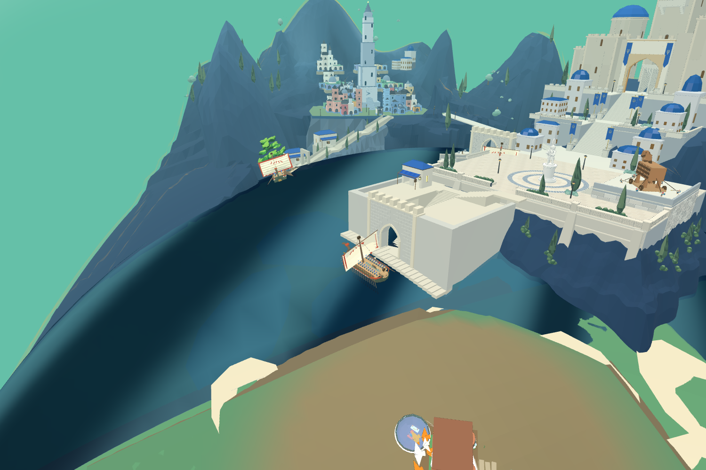
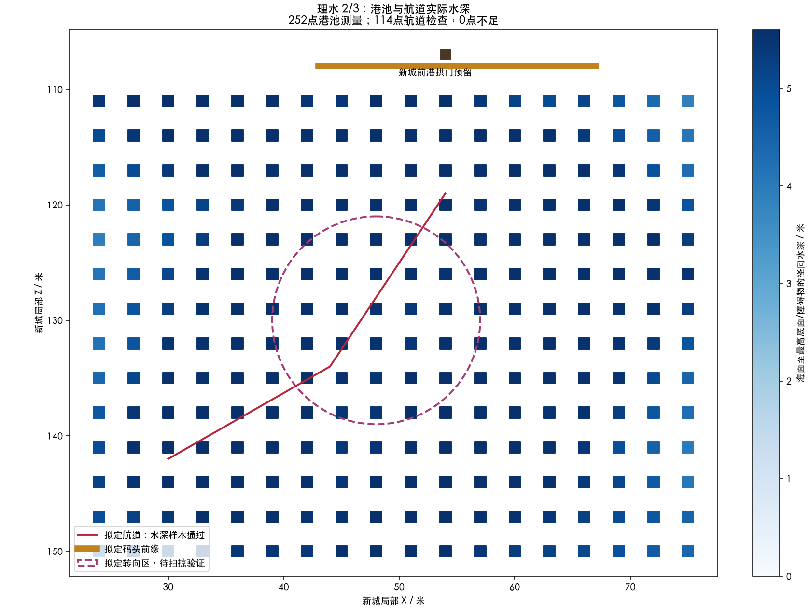
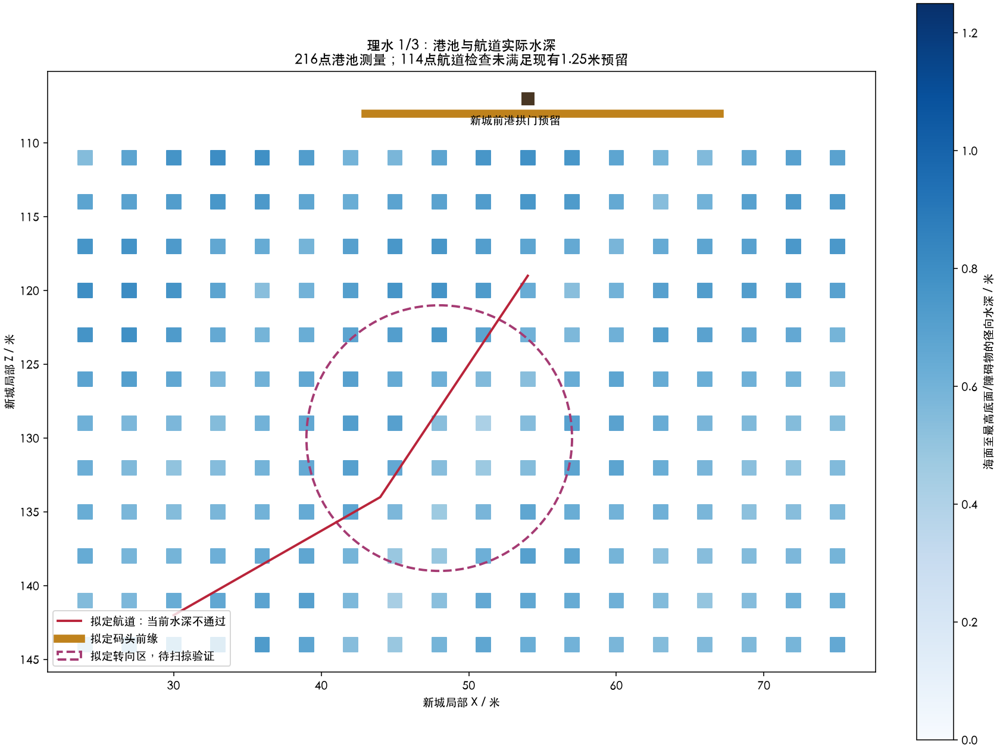

原战船82474个三角形，275个姿态检查通过；包含航道、转向圈、对正与靠岸采样，障碍包括实际海床。最初靠岸113.5/113米两处与码头相交，待泊位置退至114.5米并转向岸侧后复测通过。

这是原船在隔离测试页面的临时待泊姿态，不是正式船队已经回接。建筑仍是候选粗体块，跳板尚未连接岸面；没有完成连续航行、划桨动画或卸载验证。
港口接口已写入assets与同一个Godot工程，后续置屋按此衔接：harbor-interface-r03.json / citadel-harbor-interface-r03.json。理水三次预算用完，不追加第四轮；未完成的岸端连接与正式合入列入后续阶段。
修改原海床156个顶点，最大降低约5米；未移动全球海面。入口深水范围延伸后，114个航道点实测水深5.12～5.75米，全部超过本轮4.6米预留。

同一Godot工程实际装配45765个顶点，几何与变换逐点核对通过。仍为候选，尚未默认合入；整船扫掠、转向和靠岸衔接留在理水第3次完成。
基于R09地形，拟定码头、前港拱门、进出航道和转向区已共用布局数据。图为实际水深测量，不是生成的概念图。

港池216点水深约0.42～0.81米，拟定航道114点均不满足现有导航的1.25米预留。原因包括实际球体底面；旧导航仅检查岸边障碍，不能作为吃水通过的证据。
原船可见几何包络另存于 r01-survey.json，包含船桨和人物，不能等同船体吃水。下一轮核对下伸部件并处理局部海床；第三轮完成船体扫掠与衔接。当前船舶、海床及正式港口未改。
同一Godot工程已同步布局数据，尚未接入原生船队或改变正式场景。查看冻结的山势候选